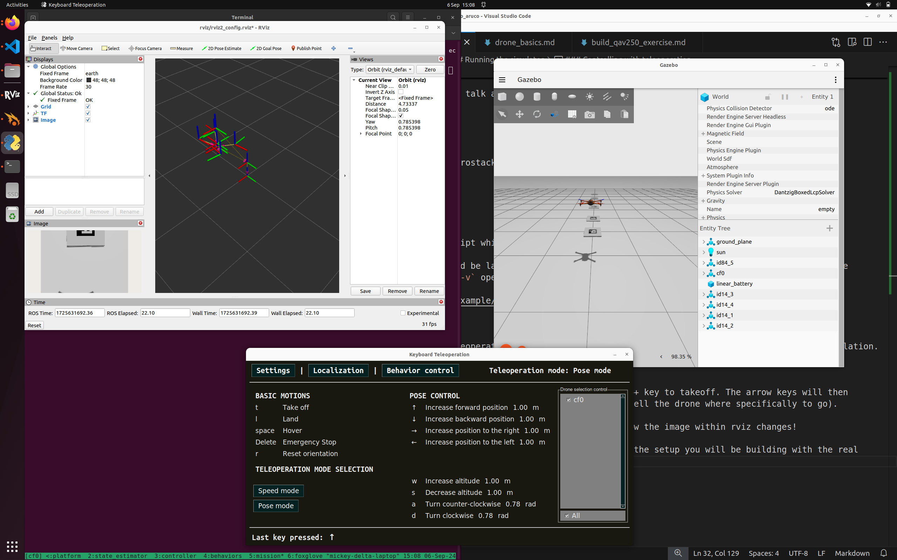

1. Practical 1: ROS2 with Aerostack2¶
In this first practical, we will quickly be jumping into the greater code ecosystem for drone work. We start by introducing Aerostack2 which is a ROS2 based framework for the control and coordination of one or more drones.
This practical also includes an introduction to ubuntu and ROS2 if you havent already. It will also take you through a ROS2 installation suggestions for various platforms.
- Linux Installation
- This article is for those who do not yet have a working Ubuntu 22.04 installation, OR those who are not as familiar with linux, and would like a refresher on how to navigate using linux.
- ROS2 Installation
- This articls is for those who have not installed ROS2 Humble on their machine OR those who have not used ROS2 before, or are unfamiliar with ROS2.
- Aerostack2
- This article gives an overview of the aerostack2 framework for aerial robotics development which will be used throughout this course.
- Gazebo Aruco Mini-Challenge
- This article introduces an example application within ROS2 and Aerostack2 and gives a mini-challenge to the student to implement a solution within aerostack2 to solve the problem
